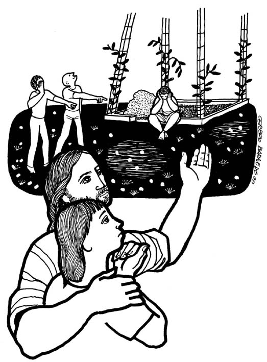

This Week: Jeremiah 18:1-11 and Psalm 139:1-6, 13-18 or Deuteronomy 30:15-20 and Psalm 1, Philemon 1-21, Luke 14:25-33

Misioneros
Del Sagrado Corazón en el Perú ,

Cerezo
Barredo's weekly gospel illustrations.
Next week: Jeremiah 4:11-12, 22-28 and Psalm 14 or Exodus 32:7-14 and Psalm 51:1-10, 1 Timothy 1:12-17, Luke 15:1-1